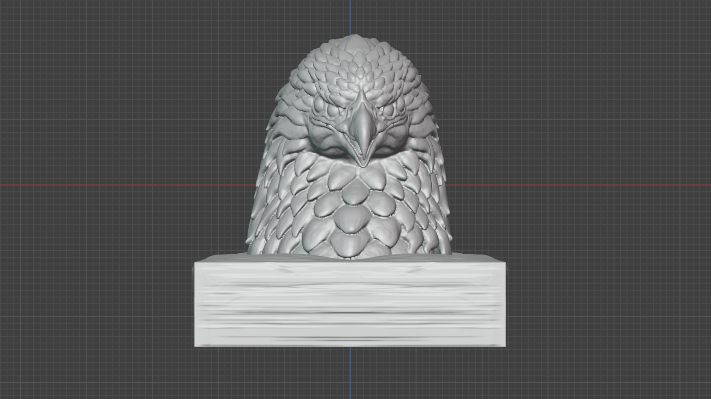
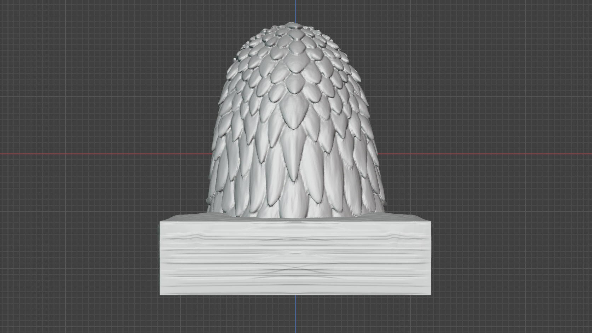
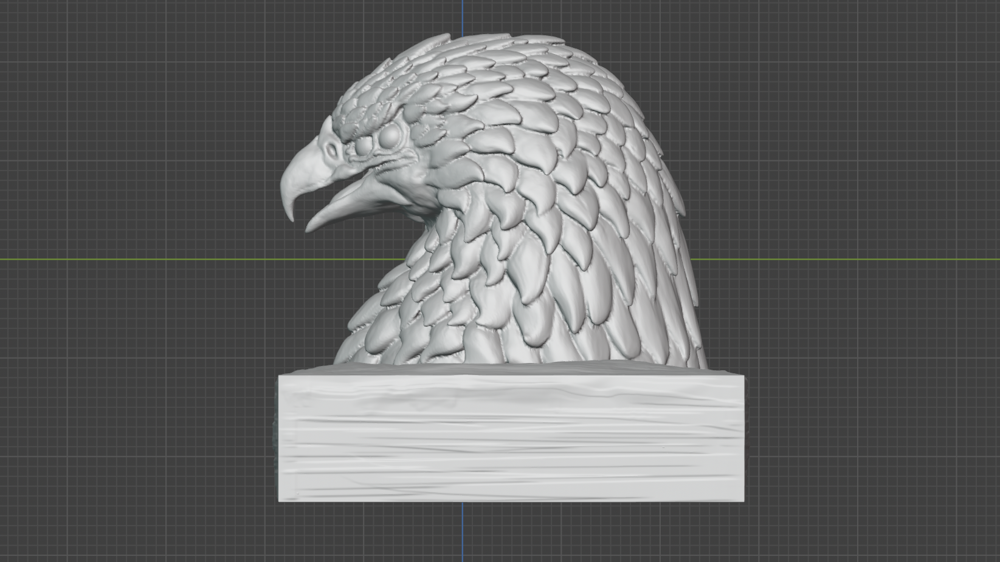
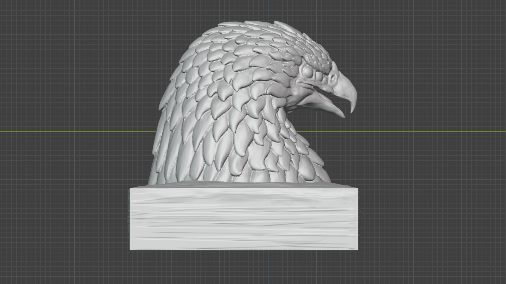
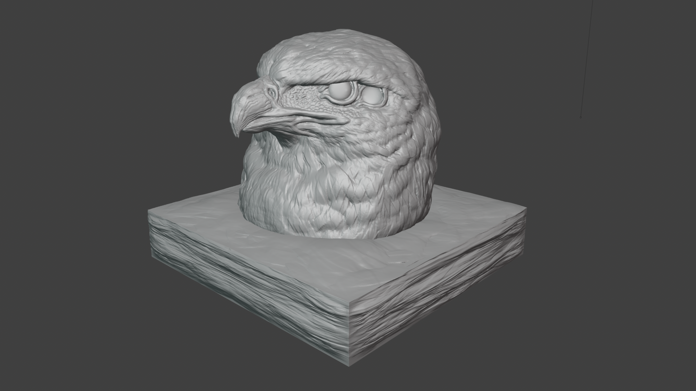
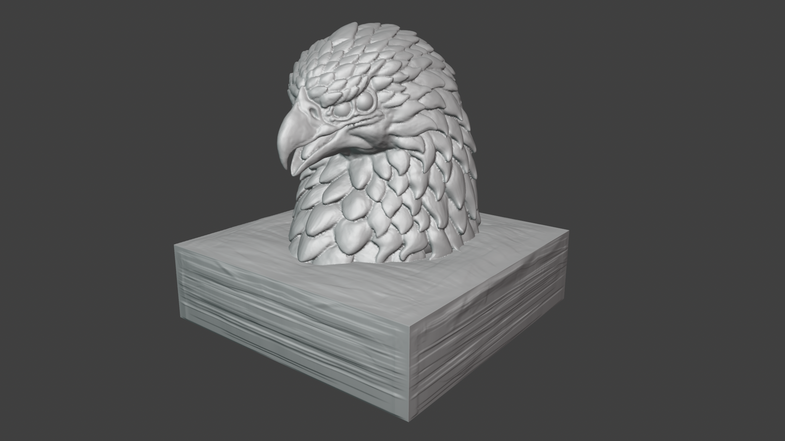

fase02：［ 出力後の下地塗装 ］
今月、投稿・更新予定です。続報をお待ちください。
【 鷹ヘッドフィギュア / Hawk Head-model 】
fase01：［ 造形について ］
最初に制作した鷲のヘッドモデルを基にしつつ、新たに鷹のヘッドモデルとしてリメイクしました。 頭の毛の重なりの表現には特にこだわり、試作版でできなかった表現も導入しています。 正面からだとわかりやすいと思いますが、顔には少し角度を設けています。 左右対称だと生き物として不自然であると感じるため、敢えて顔に少し角度をつけて生き物らしさを感じられるように設計しました。 かつ、左右からの見栄えは崩れないように意識して造形しています。



また、本作の鷹は前作の鷲ヘッドフィギュアのデザインを参考に制作しているため、 顔周りの造形は前作の良さを残しつつも、毛並みなどの表現はさらにブラッシュアップしています。 前作よりも"形状による質感"を意識して制作に取り組みました。

前作の鷲ヘッドフィギュアのページはこちらからのリンクからご覧ください。 【 鷲ヘッドフィギュア 試作版 】制作ページfase02：［ 出力後の下地塗装 ］
今月、投稿・更新予定です。続報をお待ちください。
fase03：［ 本塗装 ］
今月、投稿・更新予定です。続報をお待ちください。